Step 1¶
Remove contents from box.
Contents:¶
- 8x M.2 screws for the case
- 4x screws for the fan
- 4x bolts for the fan
- 1x fan
- 1x case top
- 1x case bottom
- 1x OLED display
- 2x bottom plastic risers
- 1x plastic top riser
- 1x plastic OLED holder that is also a front riser
- 2x small FCC ribbon cables
- 1x small rubber square that break out to 4x small rubber feet
OLED is sensitive to pressure, do NOT push down on the very thin glass as it will crack thereby making the OLED non-functional
Step 2¶
Take bottom part of the case, insert the RPI4 into the bottom case at an angle, you will need to flex the other side ever so slightly to get it to slot in.
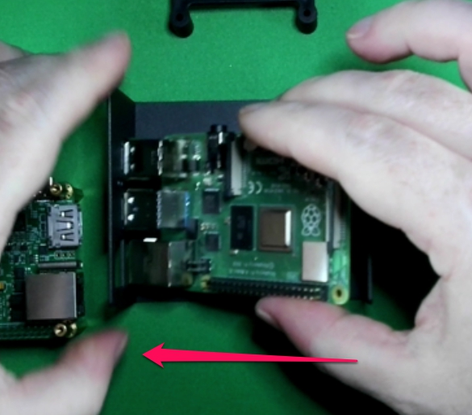
IF you bought heatsink's (sold seperatly), it's advised to install them now before installing the HAT
Step 3¶
Insert HAT at the same angle, take care to line up the pins on the Rpi with the HAT pin sleeve, the trick to this is to push the Rpi all of the way to the left then all of the way to the right for proper alignment, do NOT force till the pins are aligned. If properly aligned the pins will match up without issue.
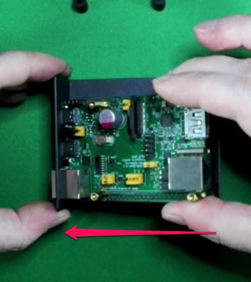
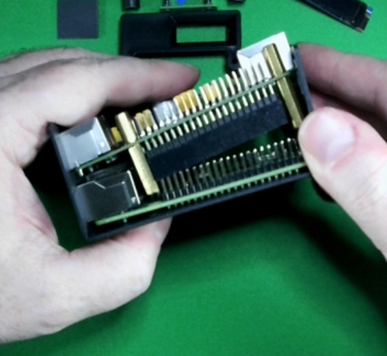
ALTERNATIVE: As an alternative to the above, you can pre assemble the hat+fcc cable onto the RPI4, then insert them into the bottom portion of the case however you will need to flex the sides more whereby creating a bigger gap when fully assembled.
Step 4¶
There are 2 ways to insert the FCC cable, you can add it when you insert the RPI in Step 2 OR wait till you also have the HAT installed and slide it into the slot.
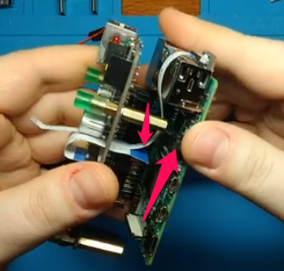
The blue stripes on the ends of the cable will ALWAYS face the side that will be used to tighten the FCC to the camera port or have it positioned towards the power
Step 5¶
Install USB-C bridge.
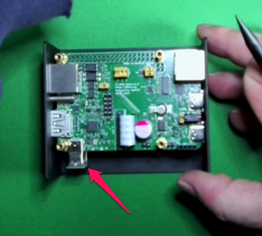
If you do not install this bridge, mouse/kb will not work
HAT will still power on without this bridge installed
Step 6¶
Turn the bottom of the case upside down, install the 2 bottom plastic risers, it's best to install in a wing formation. Top first by inserting the top screws then slide the bottom part aligning the plastic to the holes then inserting the screws. At this point its OK to tighten the bottom screws. There is no need to use force, just tighten enough to prohibit movement.
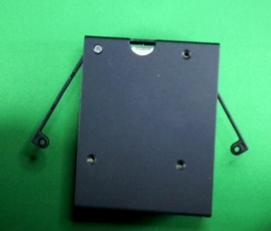
Step 7¶
Take the plastic OLED holder, turn the OLED over where the back side is facing you and insert at an angle so as to create a space between the OLED and holder arm, take a flat head screwdriver (medium normal) and twist it enough so you can clear the electronics on the bottom of the OLED and continue to gently slide in the remaining OLED till its fully inserted.
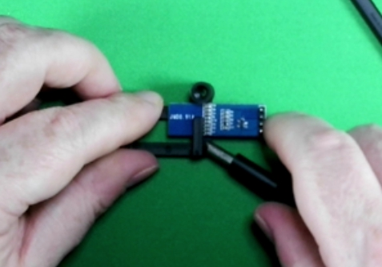
Be careful on handling this display, slight pressure will damage the OLED, however in the event that this does happen, replacements are cheap and can be found in most electronic stores or Amazon, look for any IIC (I2C) .91 inch display for Arduino
Step 8¶
Insert the OLED holder with the OLED display into the plug by gently rocking it back and forth till it's fully inserted.
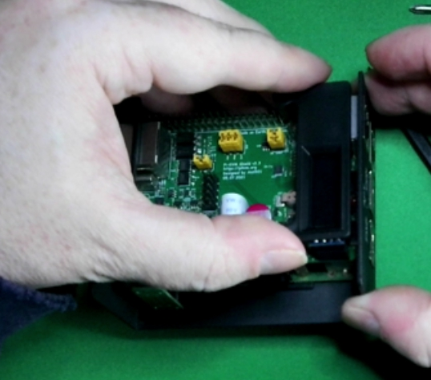
Step 8a¶
Install plastic spacer.

Step 9¶
Install the screws and bolts to secure the fan, it does not matter the orientation of the fan, push or pulling air will result in the same behavior, its personal preference.
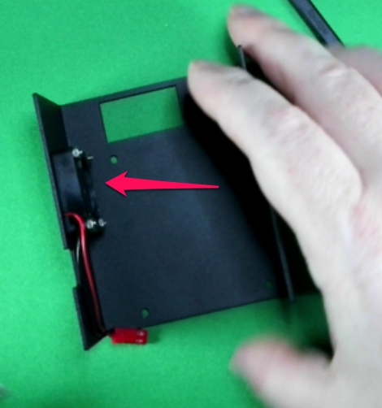
Step 10¶
Insert the fan leads and align Red with positive and Black with negative.
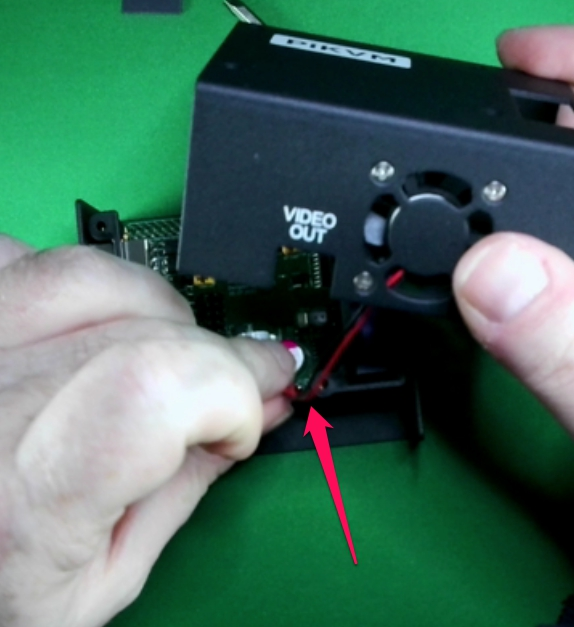
You can damage the fan if installed incorrectly
Step 11¶
Install the top of the case to the bottom, use the 4 remaining screws to secure the top.
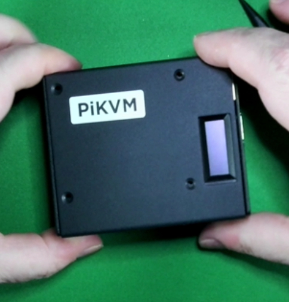
Step 12¶
Please follow the V3 guide and First Steps guide to activate your PiKVM.